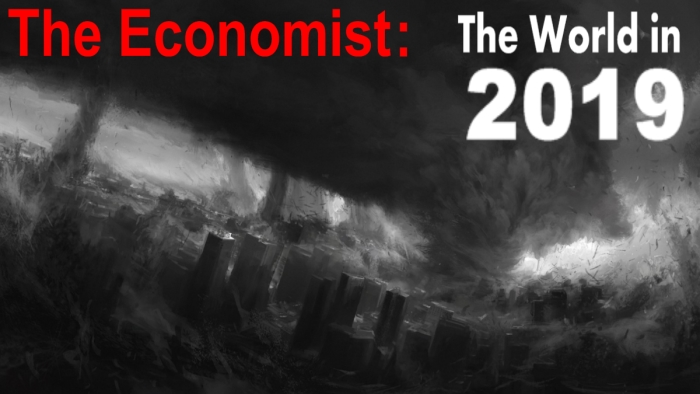

The Economist обещает в 2019-м «три дня тьмы»?След.статья
15.10.2018 9:50

Англоязычный еженедельный журнал The Economist, принадлежащий британской медиакомпании The Economist Group (которая, в свою очередь принадлежит Ротшильдам) известен сегодня каждому, кто хотя бы немного интересуется конспирологией. Однако массовую известность The Economist получил в 2014-м году, опубликовав обложку-ребус, которая как бы предсказывала события на 2015-й год:
Обложка явно подчеркнуто выпадала из традиционного стиля оформления журнала, что заставило конспирологов подумать о том, что на самом деле обложка представляет собой некий ребус, в котором зашифрованы события, которые произойдут в 2015-м году:
Однако, несмотря на безумное количество попыток расшифровки ребуса, никто ни в 2014-м, ни в последующие годы не смог предложить внятную концепцию расшифровки обложек журнала. Какие-то события угадывались, но в основном все вангования были тщетные.
Так продолжалось до лета 2018-го года, когда работающая сообща группа французских и американских конспирологов не обратила внимание, что в обложке The Economist за ноябрь 2017-го года запечатлена средневековая французская игра в гуся:
Поскольку, начиная с точки отсчета (6 июля 2018 года, церемонии Ордена Чертополоха) все главные медийные события укладываются в предложенную французами трактовку, многие люди сейчас интенсивно гадают, какой смысл вложен в картинку “горы”? В рамках предложенной трактовки картинка с горами должна обозначать событие, которое произойдет в течении ближайших нескольких дней.
И вот, пока все были заняты гаданиями на эту тему, The Economist выпустил новый номер, который озаглавлен традиционно: “Мир в 2019-м году”.
С чем связана такая очередная смена стиля? Многие конспирологи теперь усердно гадают над объяснениями.
Возможно, что редакция The Economist уволила художника и теперь главный редактор делает обложки своими силами.
Так же возможно, что художника просто поменяли и на его место пригласили кого-то из родственников господина Каземира Малевича, который в свое время изобразил свой шедевральный черный квадрат, от созерцания которого балдеют искусствоведы по всему миру.
Но если подойти к вопросу серьезно, то обложка “Мир в 2019-м году” внушает некоторую тревогу.
Самые радикальные конспирологи видят в обложке либо библейские “три дня тьмы”, обещанные пророками по всему миру, либо “три дня тьмы”, которые распространятся на все 365 дней следующего года. То есть год будет, символически выражаясь, очень темным, наполненным мрачными событиями.
Однако, если подойти к вопросу менее драматически, то становится очевиден общий стиль обложек на 2018-й и 2019-й годы:

Единственное отличие обложек – в обложке “Мир в 2019-м году” отсутствуют картинки, что как бы намекает на то, что обе обложки нужно рассматривать на как одну:
Другими словами новая обложка указывает, что ребус “Мир в 2018-м году” распространяется и на 2019-й год. А ведь это именно то, о чем и говорят французские конспирологи.
Обложка “Мир в 2018-м году” начинается с даты 6 июля, после чего идут 63 картинки, то есть 63 недели или 441 дней. Этот период как раз и захватывает 2019-й год, к исходу которого на планете будет установлен Новый Мировой Порядок.
Ну и поскольку планы мировой закулисы нам никак не помешать осуществить, то остается только следить за развитием событий и ждать ядерный взрыв, обещанный обложкой “Мир в 2018-м году”.